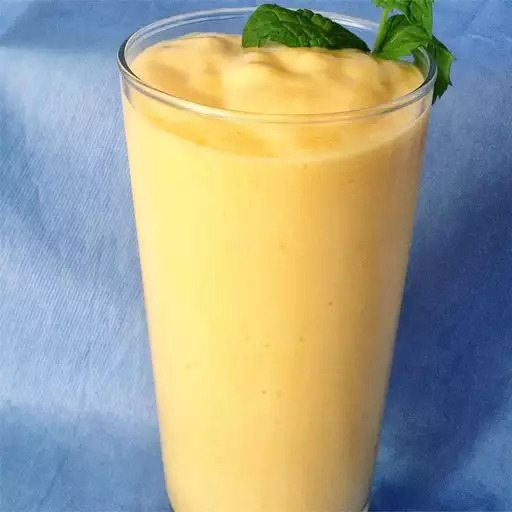

Mango Lassi
This refreshing mango lassi drink blends mango with yogurt, milk, and ice
to make a cool and creamy Indian treat! Using mango pulp makes this recipe
easy and avoids any chalky flavor you can sometimes get with fresh
mangoes. Sprinkle ground cardamom on top if you like.

Ingredients
- 2 (15.25 ounce) cans mango pulp, or mango slices with juice
- ½ cup plain yogurt
- ¼ cup milk
- 2 cups ice cubes
- Ground cardamon, for serving (Optional)
Directions
- Gather all ingredients.
-
Blend mango, yogurt, milk, and ice together in a blender until smooth.
-
Pour into tall glasses; sprinkle ground cardamon on top and serve.